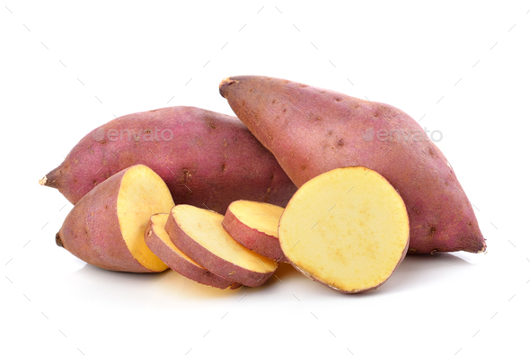
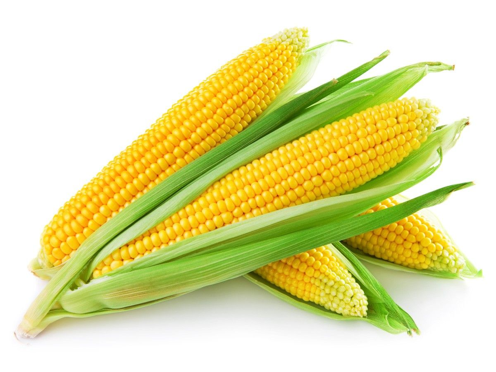

Health is not about
how much
Weight you Lose
It's all about
Life you Gain
From leafy greens to cruciferous veggies, produce is a little gift from nature to us humans. with crucial immune-boosting antioxidants, fiber, B-vitamins, and minerals, they’re the "real deal" that can make a big impact on your health. The beauty of vegetables? The more you eat of all of them, the better off you are.Since they contain lots of water, vegetables are also essential for hydration and digestion while also providing fuel for your body’s beneficial bacteria to survive and thrive. The only thing to keep to a minimum? Breading and deep-frying your veggies, That can add up if you’re preparing them with those methods frequently. Any veggie can belong on your menu, so choose what you love and use the rest as inspo for future meals and snacks you can enjoy in flavorful ways.
Broccoli

This veggie can get pigeonholed as the fiber vegetable. Its cruciferous nature—meaning it’s from the Brassica genus of plants along with cauliflower, cabbage and kale—makes it rich in many nutrients in addition to fiber.4 Studies have shown that broccoli’s 5 grams of fiber per cup can positively support the bacteria in the gut, which may help your tay healthy and balanced
Sweet Potatoes
Sweet potatoes, red potatoes, purple potatoes and even the plain old white potato are all good sources of fiber; one small potato with skin can provide close to 3 grams of fiber. The veggie has a bad reputation for running in the wrong crowds—fries and chips, to name a few. However, when not fried in oil and slathered in salt, potatoes can provide many benefits.19 Plus, the fiber in potatoes can help protect the intestinal wall from potentially harmful chemicals found in some foods and drinks.
Sweet Corn
If you want to remain young and maintain youthful looks, then you definitely have to consume sweet corn. It is a powerhouse of antioxidants useful in preventing the aging process.Sweet corn also contains carotenoids and bioflavonoids. These control cholesterol levels in the blood.Sweet corn kernels contain beta carotene, which produces vitamin A that promotes better vision